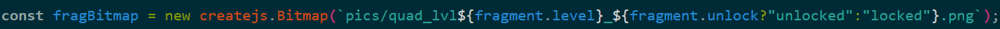
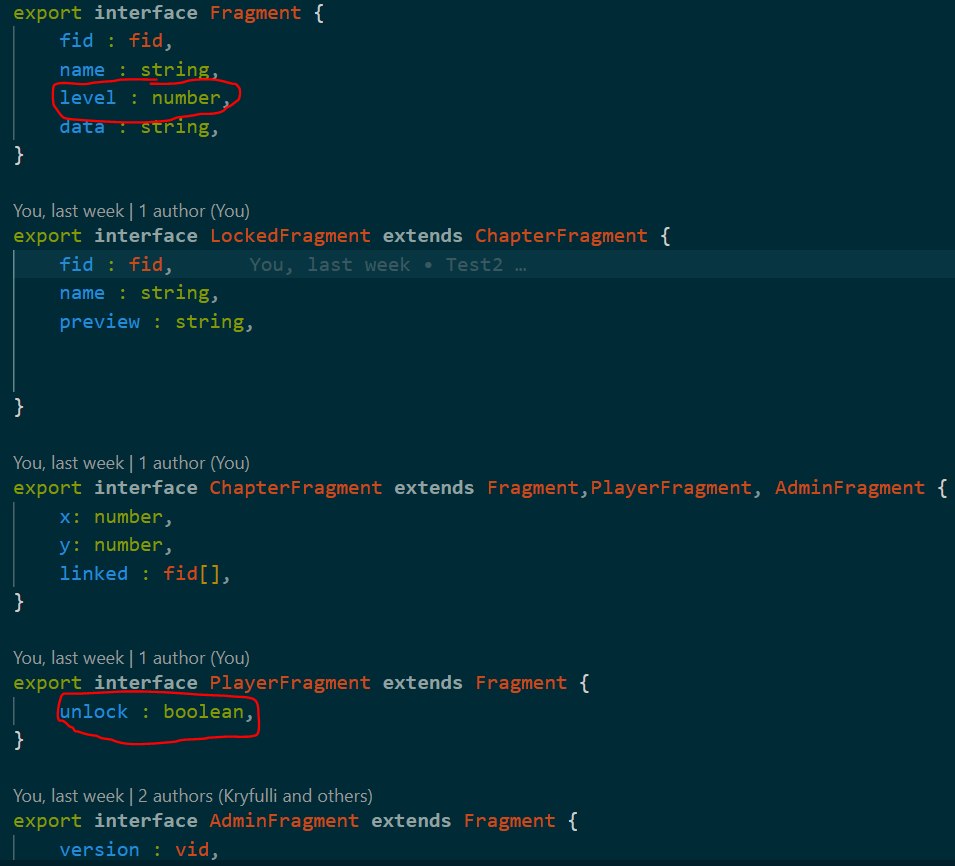
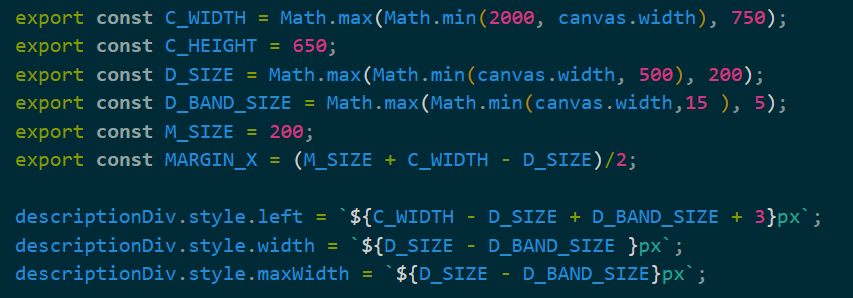
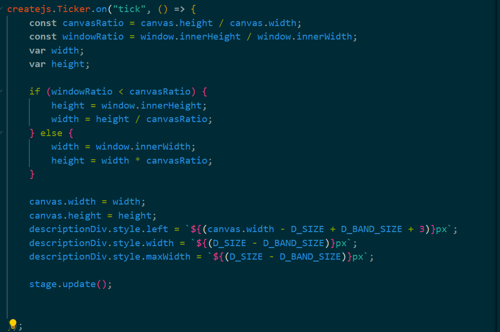
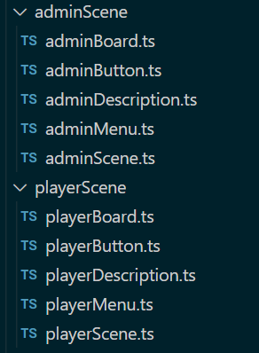
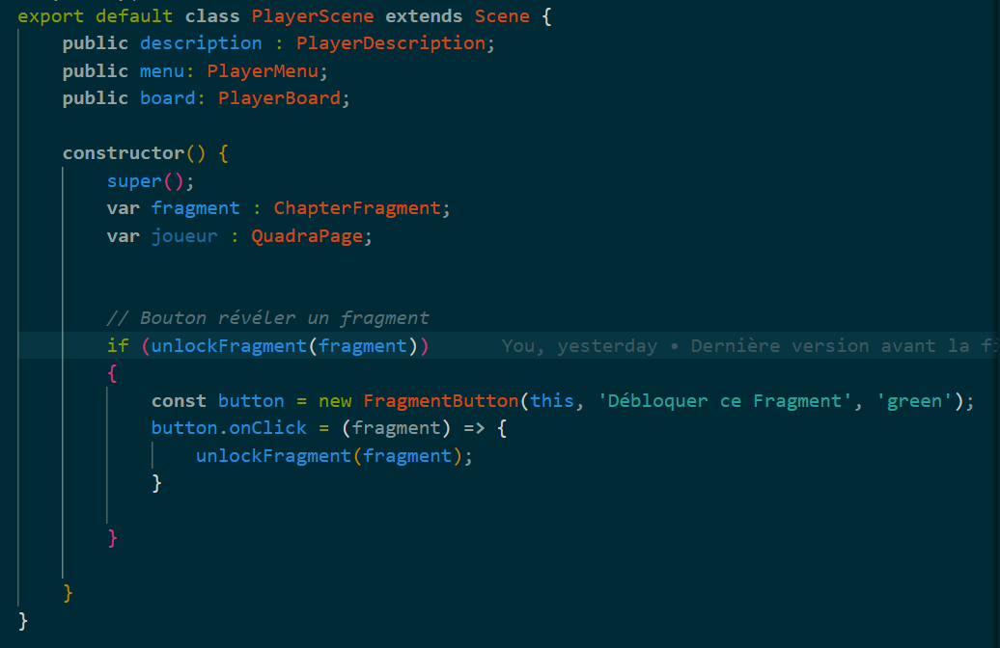
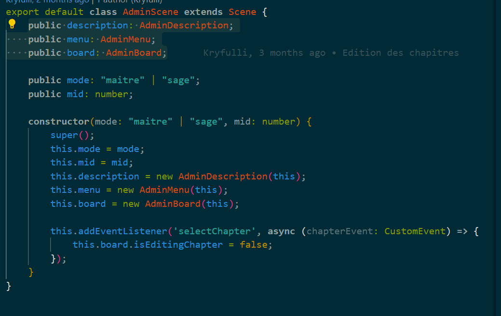
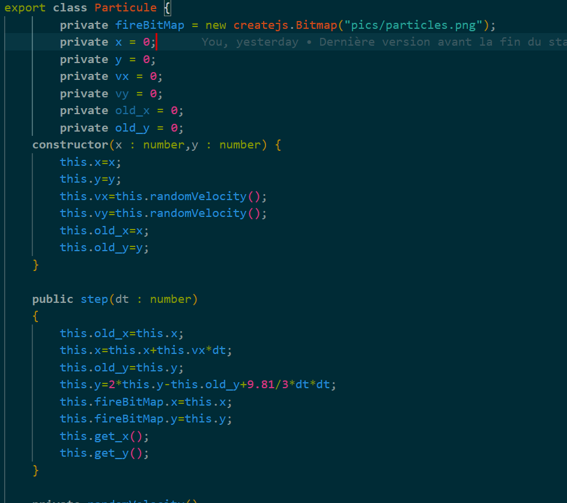
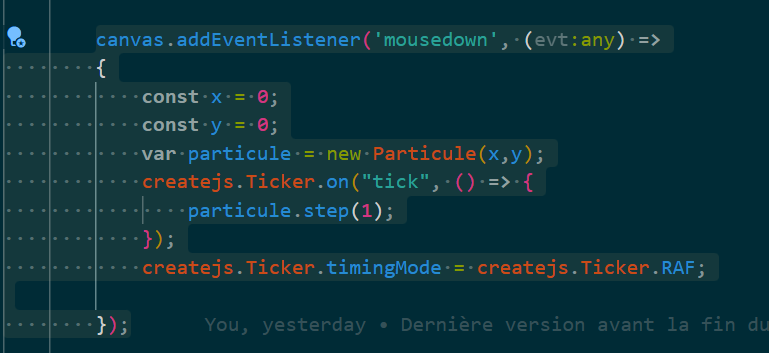

L’association HEROBRINE est une association au statut juridique 1901. Dont le but est de faire promouvoir la culture numérique sur internet et par l’organisation de salons autour du numérique. L’association prévoit de commercialiser des objets promotionnels (t-shirts, mugs, posters, etc.) pour pouvoir se financer. L’association prévoit également de publier des livres, romans ou albums (sous forme de livres électroniques ou papier) qui seraient issus des travaux de création artistique réalisés dans l’association.
L'association HEROBRINE cherche un stagiaire pour s'occuper de la mise en place de fonctionnalité sur une page qui sera ajouté sur leur site web, pour cela, le stagiaire devra réaliser les tâches qui lui seront demandés au fil de son stage. La page en question est une page contenant divers informations permettant aux joueurs de pouvoir accéder à différents éléments de l'Histoire en fonction d'une ressource nommée "les fragments". Ces fragments ont un affichage quand ils sont non débloqués et quand ils sont débloqués.
Synopsis : Cette mission consiste à créer un algorithme qui permet de changer d’image en fonction d’un attribut nommé « level » qui se situe dans une interface, il y a deux types d’états et trois types de level, ce qui donne au total 6 changements possibles d’image en fonction du level.
Quelques images pour appuyer ce projet..


Quelques informations supplémentaires, ici, les attributs level et unlocked servent à définir la ligne de commande, donc, si une ligne de commande est définis avec un level 3 et un attribut unlocked true, alors le nom de l'image choisit sera : "quad_lvl_3_unlocked".
Synopsis : Cette mission consiste à rendre responsive (à adapter les dimensions en fonction de l’écran) les parties du canvas et de ses divs. Ce mini-projet a nécessité l'utilisation d'un canvas (comme dit précédemment) et d'un ticker
Quelques images pour appuyer ce projet..


Quelques informations supplémentaires, ici, la deuxième image initie les premières dimensions du canvas et le ticker adapte en fonction de la taille de l'écran de l'utilisateur.
Synopsis : Ce mini-projet consisteonsiste à mettre en place une interface pour les joueurs sans les fonctionnalités d’administrations. Il y aura deux scenes, une pour les administrateurs (avec toutes les permissions comme la création de fragment) et une autre scene pour les joueurs avec seulement le visionnage de ces fragments.
Quelques images pour appuyer ce projet..



Synopsis : Ce projet consiste à mettre en place une petite animation lorsqu’un joueur réussit à débloquer un fragment (objet) sur le site, la personne aura accès à de nouvelles informations.
Quelques images pour appuyer ce projet..

